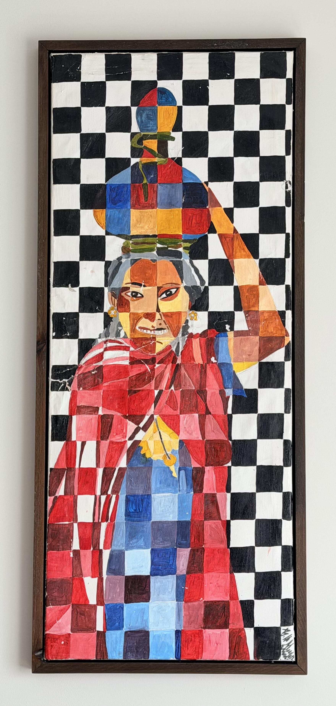
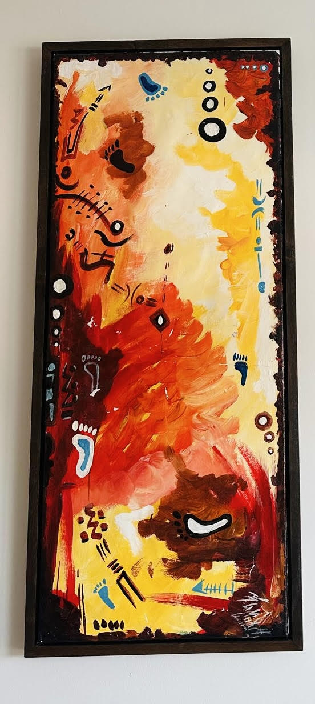

The Collection
Select a piece to explore the narrative behind the canvas.

Daughter of Courage
View Details →
A bridge between ancestral West African storytelling and modern geometric abstraction.
Select a piece to explore the narrative behind the canvas.


A vibrant tribute to the strength of Ivorian women, this painting portrays a brave, resilient figure carrying her burdens with dignity. The mosaic-like patterns echo traditional Ivorian textiles, celebrating a heritage where women stand at the heart of community, labor, and cultural identity.
← Back to GalleryThis artwork reflects the Ivorian belief that peace is a journey walked together. The footprints and symbols echo traditional West African storytelling, where every step carries memory, wisdom, and community. Through warm, harmonious colors and ancestral motifs, the painting celebrates Côte d’Ivoire’s enduring spirit of unity and the hope that peace leaves a trail for future generations to follow.
← Back to GalleryBoris Edec is an Ivorian artist whose work radiates the warmth, resilience, and cultural pride of Côte d’Ivoire. Born into humble beginnings, he grew up surrounded by the colors, rhythms, and stories that shape everyday life in his community. These early experiences became the foundation of his artistic voice, a voice dedicated to honoring the strength of his people and the beauty of his homeland. Driven by a deep sense of purpose, Boris uses his art to share the love of Ivory Coast with the world. His paintings blend traditional symbolism with contemporary expression, celebrating Ivorian identity while inviting global audiences to feel its spirit. Whether portraying bravery, peace, or the quiet dignity of daily life, Boris’s work stands as a testament to where he comes from and the legacy he hopes to uplift.